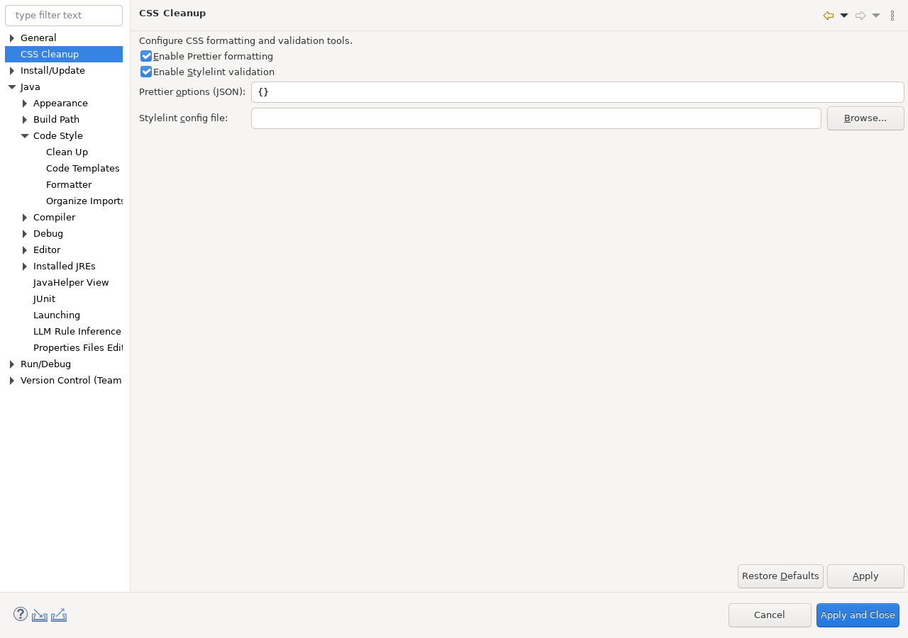

Formats CSS, SCSS, and LESS resources with an explicitly configured Prettier installation.
This documentation is installed by sandbox_css_cleanup_feature
together with the runtime plug-in. The runtime plug-in does not depend on this Help bundle.
Configure CSS Cleanup in Preferences, then select a .css, .scss, or .less file and choose the matching Format ... with Prettier context action.

Continue with Using this feature and Reference, safety, and limitations.